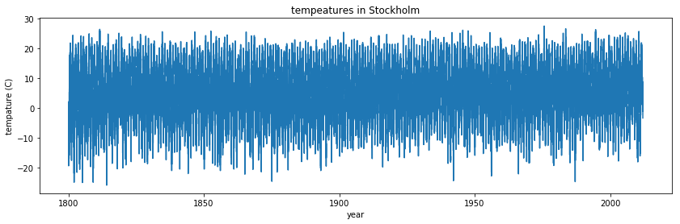

Ahmed Ammar et Hassen Ghalila
Faculté des Sciences de Tunis, Université de Tunis El Manar
#Juste pour savoir la dernière fois que cela a été exécuté:
import time
print(time.ctime())
Sun May 7 22:58:21 2017
# De quoi s'agit-il de cette ligne?!? Réponse dans le cours MatplotlibIntro.
%pylab inline
Populating the interactive namespace from numpy and matplotlib
La bibliothèque numpy (module) est utilisé dans presque tous les calculs numériques à l’aide de Python. C’est une bibliothèque qui fournit des structures de données vectorielles, matricielles et de dimension supérieure à haute performance pour Python. Il est implémenté dans C et Fortran, alors lorsque les calculs sont vectorisés (formulés avec des vecteurs et des matrices), les performances sont très bonnes.
Pour utiliser numpy, vous devez importer le module à l’aide de l’exemple:
from numpy import *
Dans la bibliothèque numpy, la terminologie utilisée pour les vecteurs, les matrices et les ensembles de données à grande dimension est array.
numpyIl existe plusieurs façons d’initialiser de nouveaux tableaux numpy, par exemple à partir de
arange,linspace, etc.Par exemple, pour créer de nouveaux tableaux vectoriels et matriciels à partir de listes Python, nous pouvons utiliser la fonction numpy.array.
# Un vecteur: l'argument de la fonction array est une liste Python
v = array([1,2,3,4])
v
array([1, 2, 3, 4])
# Une matrice: l'argument de la fonction de tableau est une liste de Python imbriquée
M = array([[1, 2], [3, 4]])
M
array([[1, 2],
[3, 4]])
Les objets v etM sont tous deux du type ndarray que fournit le modulenumpy.
type(v), type(M)
(numpy.ndarray, numpy.ndarray)
La différence entre les tableaux v etM n’est que leurs formes. Nous pouvons obtenir des informations sur la forme d’un tableau en utilisant la propriété ndarray.shape.
v.shape
(4,)
M.shape
(2, 2)
Le nombre d’éléments dans le tableau est disponible via la propriété ndarray.size:
M.size
4
De manière équivalente, nous pourrions utiliser la fonction numpy.shape et numpy.size
shape(M)
(2, 2)
size(M)
4
Jusqu’à présent, le numpy.ndarray ressemble beaucoup à une liste Python (ou à une liste imbriquée). Pourquoi ne pas utiliser simplement les listes Python pour les calculs au lieu de créer un nouveau type de tableau?
Il existe plusieurs raisons:
numpy peut être implémentée dans une langue compilée (C et Fortran sont utilisés).En utilisant la propriété dtype (type de données) d’unndarray, on peut voir quel type les données d’un tableau ont:
M.dtype
dtype('int64')
Nous obtenons une erreur si nous essayons d’attribuer une valeur du type incorrect à un élément dans un tableau numpy:
M[0,0] = "hello"
---------------------------------------------------------------------------
ValueError Traceback (most recent call last)
<ipython-input-14-a09d72434238> in <module>()
----> 1 M[0,0] = "hello"
ValueError: invalid literal for int() with base 10: 'hello'
Si nous voulons, nous pouvons définir explicitement le type de données du tableau lorsque nous le créons, en utilisant l’argument de mot-clé dtype:
M = array([[1, 2], [3, 4]], dtype=complex)
M
array([[ 1.+0.j, 2.+0.j],
[ 3.+0.j, 4.+0.j]])
Le type commun qui peut être utilisé avec dtype est:int, float,complex, bool,object, etc.
Nous pouvons également définir explicitement la taille des bits des types de données, par exemple: int64,int16, float128,complex128.
Pour les tableaux plus grands, il est inopérant d’initialiser les données manuellement, en utilisant des listes de pythons explicites. Au lieu de cela, nous pouvons utiliser l’une des nombreuses fonctions dans numpy qui génère des tableaux de différentes formes. Certains des plus communs sont:
# create a range
x = arange(0, 10, 1) # Arguments: start, stop, step
x
array([0, 1, 2, 3, 4, 5, 6, 7, 8, 9])
x = arange(-1, 1, 0.1)
x
array([ -1.00000000e+00, -9.00000000e-01, -8.00000000e-01,
-7.00000000e-01, -6.00000000e-01, -5.00000000e-01,
-4.00000000e-01, -3.00000000e-01, -2.00000000e-01,
-1.00000000e-01, -2.22044605e-16, 1.00000000e-01,
2.00000000e-01, 3.00000000e-01, 4.00000000e-01,
5.00000000e-01, 6.00000000e-01, 7.00000000e-01,
8.00000000e-01, 9.00000000e-01])
# En utilisant linspace, les deux points finaux sont inclus
linspace(0, 10, 25)
array([ 0. , 0.41666667, 0.83333333, 1.25 ,
1.66666667, 2.08333333, 2.5 , 2.91666667,
3.33333333, 3.75 , 4.16666667, 4.58333333,
5. , 5.41666667, 5.83333333, 6.25 ,
6.66666667, 7.08333333, 7.5 , 7.91666667,
8.33333333, 8.75 , 9.16666667, 9.58333333, 10. ])
logspace(0, 10, 10, base=e)
array([ 1.00000000e+00, 3.03773178e+00, 9.22781435e+00,
2.80316249e+01, 8.51525577e+01, 2.58670631e+02,
7.85771994e+02, 2.38696456e+03, 7.25095809e+03,
2.20264658e+04])
x, y = mgrid[0:5, 0:5] # Similaire à meshgrid dans MATLAB
x
array([[0, 0, 0, 0, 0],
[1, 1, 1, 1, 1],
[2, 2, 2, 2, 2],
[3, 3, 3, 3, 3],
[4, 4, 4, 4, 4]])
y
array([[0, 1, 2, 3, 4],
[0, 1, 2, 3, 4],
[0, 1, 2, 3, 4],
[0, 1, 2, 3, 4],
[0, 1, 2, 3, 4]])
from numpy import random
# Nombres aléatoires uniformes dans [0,1]
random.rand(5,5)
array([[ 0.18833506, 0.61908035, 0.82407406, 0.66648105, 0.33984563],
[ 0.56950581, 0.23085039, 0.06931935, 0.78346593, 0.75663626],
[ 0.83060891, 0.00928922, 0.17144915, 0.59934418, 0.87226107],
[ 0.20601526, 0.4676143 , 0.25111431, 0.31004841, 0.10934966],
[ 0.94912742, 0.47352362, 0.28203614, 0.18393785, 0.19158859]])
# Nombres aléatoires distribués normalisés
random.randn(5,5)
array([[ 1.24233259, -1.56081731, 0.7560079 , -0.35474395, 0.88505342],
[-1.92600413, -0.25536972, 0.09296484, -0.76565361, 0.98100651],
[-1.52547362, -0.58595585, 0.09292807, -0.16112747, 2.12238306],
[ 0.70409189, -0.23339021, -0.19649908, -0.3095259 , -0.63371277],
[ 0.50526267, 0.17285553, 0.30237303, -0.06148096, -1.33634299]])
# Une matrice diagonale
diag([1,2,3])
array([[1, 0, 0],
[0, 2, 0],
[0, 0, 3]])
# Diagonale avec décalage de la diagonale principale
diag([1,2,3], k=1)
array([[0, 1, 0, 0],
[0, 0, 2, 0],
[0, 0, 0, 3],
[0, 0, 0, 0]])
zeros((3,3))
array([[ 0., 0., 0.],
[ 0., 0., 0.],
[ 0., 0., 0.]])
ones((3,3))
array([[ 1., 1., 1.],
[ 1., 1., 1.],
[ 1., 1., 1.]])
Un format de fichier très commun pour les fichiers de données sont les valeurs séparées par des virgules (CSV) ou un format connexe tel que TSV (valeurs séparées par des onglets). Pour lire les données de ce fichier dans les tableaux Numpy, nous pouvons utiliser la fonction numpy.genfromtxt. Par exemple,
!head data/stockholm_td_adj.dat
1800 1 1 -6.1 -6.1 -6.1 1
1800 1 2 -15.4 -15.4 -15.4 1
1800 1 3 -15.0 -15.0 -15.0 1
1800 1 4 -19.3 -19.3 -19.3 1
1800 1 5 -16.8 -16.8 -16.8 1
1800 1 6 -11.4 -11.4 -11.4 1
1800 1 7 -7.6 -7.6 -7.6 1
1800 1 8 -7.1 -7.1 -7.1 1
1800 1 9 -10.1 -10.1 -10.1 1
1800 1 10 -9.5 -9.5 -9.5 1
data = genfromtxt('data/stockholm_td_adj.dat')
data.shape
(77431, 7)
fig, ax = subplots(figsize=(14,4))
ax.plot(data[:,0]+data[:,1]/12.0+data[:,2]/365, data[:,5])
ax.axis('tight')
ax.set_title('tempeatures in Stockholm')
ax.set_xlabel('year')
ax.set_ylabel('tempature (C)');
